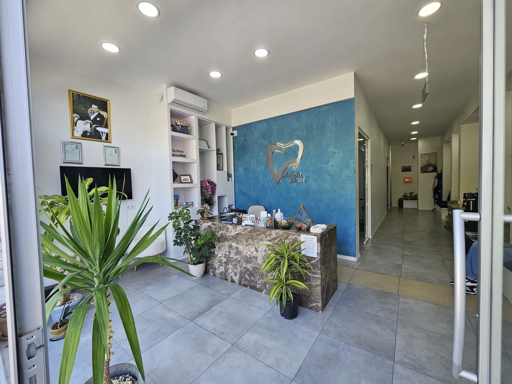
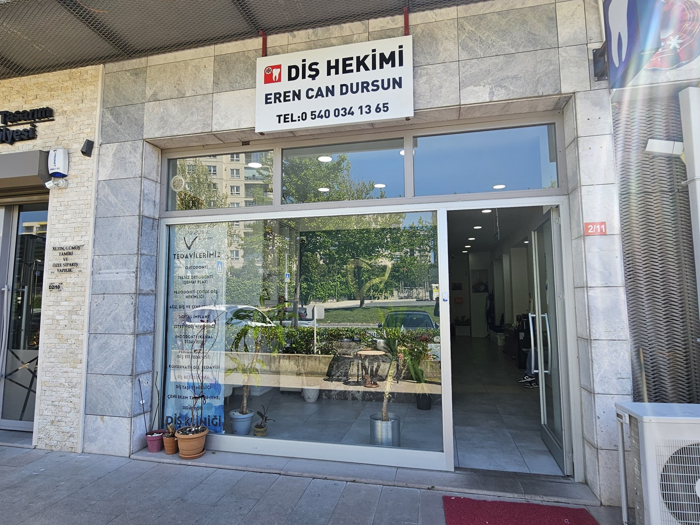
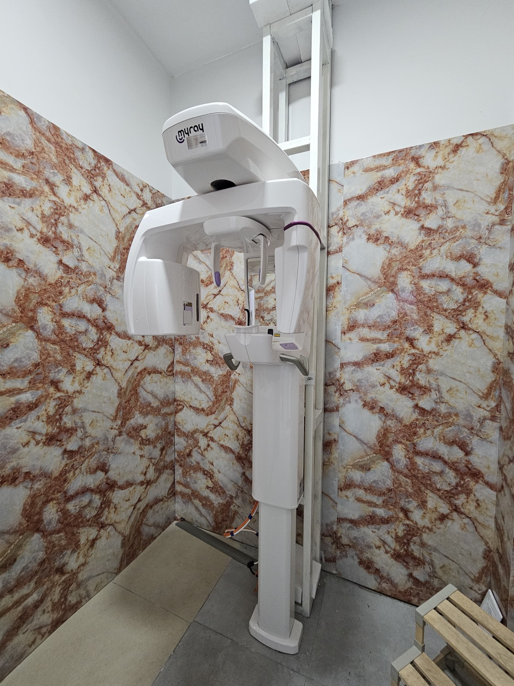
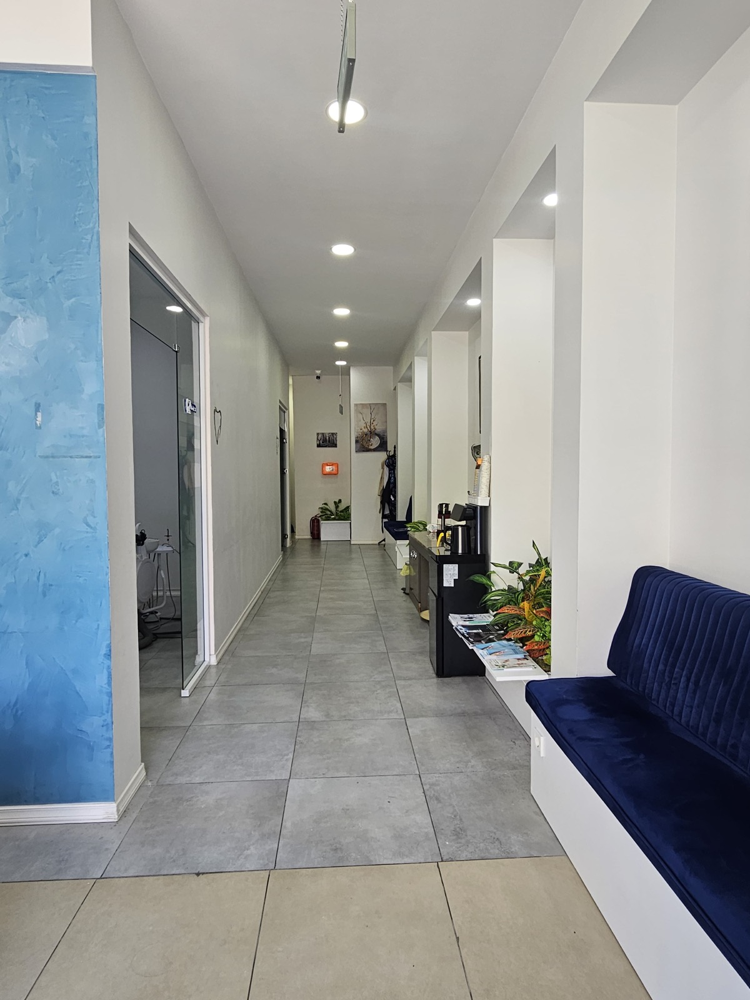
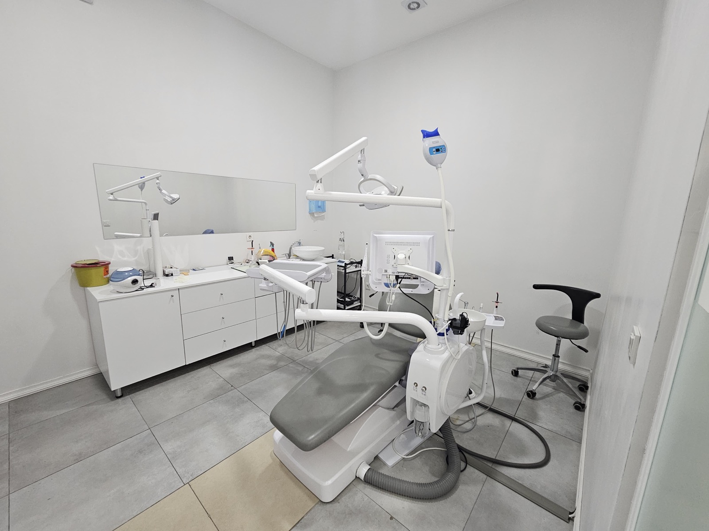
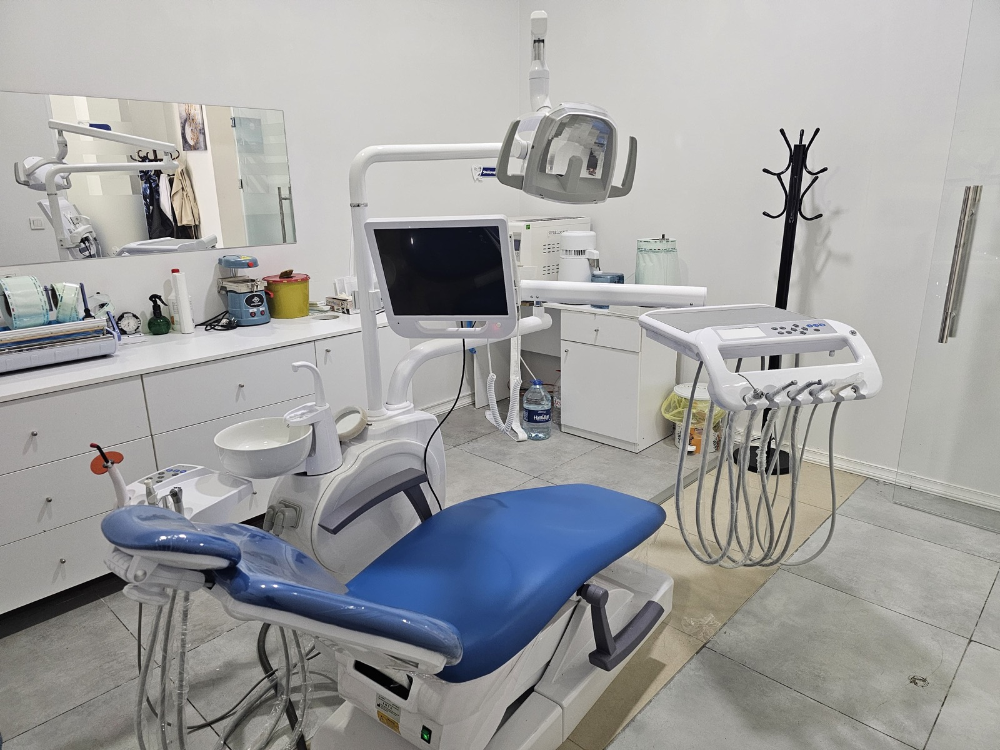

Şeffaf iletişim, detaylı planlama ve kişiye özel tedavi süreçleri.
Modern diş hekimliğinde estetik ve güven odaklı yaklaşım
Archident Diş Kliniği
Dt. Eren Can Dursun yönetiminde implant, estetik diş hekimliği, gülüş tasarımı ve koruyucu tedaviler için sade, güven veren ve kişiye özel bir klinik yaklaşımı sunar.
- Hasta konforu odaklı yaklaşım
- Güncel teknoloji ve dijital planlama
- 7/24 telefon ve WhatsApp ile ulaşılabilir iletişim

Doğal görünüm, fonksiyon ve uzun dönem memnuniyeti birlikte düşünülür.
7/24 telefon ve WhatsApp üzerinden randevu ve acil durum bilgilendirmesi.
Hakkımızda
Hasta konforunu ve doğru planlamayı merkeze alan modern klinik.
Archident, modern diş hekimliği uygulamalarını hasta konforu, estetik beklentiler ve doğru tedavi planlamasıyla birleştiren bir diş kliniğidir.
Kliniğimizde implant tedavileri, estetik diş hekimliği uygulamaları, gülüş tasarımı, kanal tedavisi, cerrahi işlemler ve koruyucu diş hekimliği hizmetleri güncel teknolojiler eşliğinde uygulanmaktadır.
Amacımız yalnızca diş tedavisi yapmak değil; hastalarımıza sağlıklı, estetik ve özgüvenli bir gülüş kazandırmaktır.
Muayenehanemiz
Kişiye özel planlama, modern teknoloji ve sakin bir klinik deneyimi.
Dt. Eren Can Dursun; implant tedavileri, estetik diş hekimliği, gülüş tasarımı ve ileri cerrahi uygulamalar başta olmak üzere birçok alanda çalışmalarını sürdürmektedir.
Tedavi süreçlerinde detaylı planlama, hasta iletişimi ve doğal estetik anlayışı ön planda tutulur.





Tedaviler
Kapsamlı diş hekimliği hizmetleri
Muayene, dijital görüntüleme ve kişiye özel tedavi planlamasıyla; estetik, cerrahi ve koruyucu diş hekimliği hizmetleri tek çatı altında değerlendirilir.
Dijital planlama
Kişiye özel tedavi
7/24 iletişim
İmplant Tedavisi
Eksik dişlerde doğal dişe en yakın estetik ve fonksiyonel çözüm.
Detaylı bilgiZirkonyum Kaplama
Yüksek ışık geçirgenliğiyle doğal görünüme yakın estetik restorasyon.
Detaylı bilgiGülüş Tasarımı
Dijital planlama ile yüz hattına uyumlu, kişiye özel estetik gülüşler.
Detaylı bilgiKanal Tedavisi
Enfekte dişlerin çekilmeden korunmasına odaklanan hassas tedavi süreci.
Detaylı bilgiDiş Beyazlatma
Klinik ortamında kısa sürede daha parlak ve dengeli diş tonları.
Detaylı bilgiDiş Taşı Temizliği
Diş eti sağlığını korumaya yardımcı düzenli bakım uygulamaları.
Detaylı bilgiOrtodontik Tedaviler
Şeffaf plaklar veya teller ile estetik ve fonksiyonel dizilim hedefi.
Detaylı bilgiÇene Cerrahisi
Gömülü diş, implant cerrahisi ve ileri kemik uygulamalarında titiz yaklaşım.
Detaylı bilgiKret Split Uygulaması
Kemik genişliği yetersiz alanlarda implant planlamasını destekleyen işlem.
Detaylı bilgiKemik Grefti Uygulamaları
Eksik kemik bölgelerini desteklemeye yönelik ileri cerrahi planlama.
Detaylı bilgiÇocuk Diş Hekimliği
Koruyucu ve güven verici yaklaşımla çocuklarda sağlıklı ağız gelişimi.
Detaylı bilgiEstetik Dolgu
Doğal diş rengine uyumlu kompozit materyallerle estetik restorasyon.
Detaylı bilgiProtez Tedavileri
Eksik dişlerin çiğneme, konuşma ve estetik etkileri için kişiye özel çözümler.
Detaylı bilgiDiş Eti Tedavileri
Diş eti kanaması, çekilme ve iltihap problemlerinde planlı bakım.
Detaylı bilgiNeden Archident?
Kurumsal çizgi, temiz iletişim ve estetik hassasiyet.
Detaylı Muayene
Her hastanın ağız yapısı ve beklentileri ayrı değerlendirilir.
Güncel Teknoloji
Dijital planlama, görüntüleme ve ileri cihaz altyapısı kullanılır.
Uzun Vadeli Başarı
Tedavi sonrası konfor, dayanıklılık ve doğal sonuç birlikte ele alınır.
7/24 Acil Diş Hekimliği İletişimi
Acil diş ağrısı, travma ve şişlik durumlarında bize ulaşabilirsiniz.
Gece, hafta sonu ve beklenmeyen acil durumlarda yönlendirme
Archident Diş Kliniği; şiddetli diş ağrısı, yüz veya diş eti şişliği, travma sonrası diş kırığı, kanama, apse şüphesi ve ani gelişen hassasiyet gibi durumlarda 7/24 telefon ve WhatsApp üzerinden ulaşılabilir iletişim desteği sağlar.
Acil başvurularda öncelik; şikayetin doğru anlaşılması, gerekli yönlendirmenin yapılması ve uygun randevu planının oluşturulmasıdır. Hayati risk, yoğun kanama veya ciddi travma durumlarında en yakın acil sağlık birimine başvurmanız önerilir.
Ağrı ve Apse
Şiddetli diş ağrısı, zonklama, şişlik ve apse şüphesinde hızlı ön değerlendirme.
Kırık ve Travma
Diş kırığı, dolgu düşmesi veya çarpma sonrası gelişen hassasiyetlerde yönlendirme.
Randevu Planı
Şikayetin aciliyetine göre telefon veya WhatsApp üzerinden uygun randevu planı.
Google Yorumları
Hastalarımızın Google'da paylaştığı gerçek deneyimler
Tedavi süreci, iletişim, hijyen, ağrısız işlem deneyimi ve hasta memnuniyeti hakkında Google İşletme profilimizde yayınlanan 5 yıldızlı yorumlardan seçilmiştir.
Google Puanı
4.9
★★★★★
62 Google yorumu
Gerçek Google yorumları
5 yıldızlı deneyimler
Doğrulanmış işletme profili
M
★★★★★
Metehan Eyiçalış
5 yorum · 2 fotoğraf · bir yıl önce düzenlendi
Eren hoca gerçekten işinde başarılı bir hekim. Gereksiz tedavi yöntemleri uygulamıyor. Uzun yıllardır diş hekimi fobimi doktorun yaklaşımı ve tedavi boyunca bilgilendirici olması tedavi sürecinde inanılmaz iyiydi. Ayrıca iğne yaptığında iğnenin girdiğini ve çıktığı bile hiç anlamadım. Kendisine dolgu ve diş temizlettiğim için mutluyum. Kesinlikle tavsiye ediyorum!
S
★★★★★
Semra Ozdikmenli
5 yorum · 3 fotoğraf · 2 ay önce
Diş beyazlatma işlemi için biraz çekinerek gitmiştim ama süreç düşündüğümden çok daha rahat geçti. Hekim işlem öncesinde tüm aşamaları detaylı şekilde anlattı ve aklımdaki soruları sabırla cevapladı, bu da kendimi güvende hissetmemi sağladı.
M
★★★★★
mert ogul
2 yorum · 9 ay önce
Tavsiye nedeniyle Eren Can beyi ziyaret ettik ilgisi, hijyeni ve tedavilere yaklaşımı nedeniyle çok memnun kaldık alt üst tüm ağız implant yaptırdım çok memnunum sırf memnun kaldığımdan anadolu yakasından gelip gidiyoruz. Herkese tavsiye ederiz.
K
★★★★★
Kaan Mukan
1 yorum · 2 ay önce
Ortodonti tedavisi gördüm kısa zamanda dişlerim düzeldi çok ilgililer.
S
★★★★★
Selçuk Yiğit
6 yorum · bir yıl önce
Kanal ve dolgu tedavisi için gittim Eren bey gerçekten hem bizleri çok hoş karşılayıp hem çok rahatlattı ve süper bir tedavi sonrası gerçekten sıfır ağrı sıfır sıkıntı çok teşekkür ediyorum kendisine çok sağolun çözümünü bulamadığınız diş ağrıları için Eren beyi canı gönülden tavsiye ediyorum.
Yerel SEO Odaklı Hizmet Alanı
Beylikdüzü'nün tüm mahallelerine hitap eden diş kliniği
Kliniğimiz Marmara Mahallesi, Yurt Caddesi, Dekar Asmalı Hayat Sitesi 2/11 adresinde konumlanır; Beylikdüzü diş kliniği, Beylikdüzü diş hekimi ve Marmara Mahallesi diş kliniği aramalarında doğru yerel eşleşme sağlayacak şekilde yapılandırılmıştır.
İmplant tedavisi, estetik diş hekimliği, gülüş tasarımı, zirkonyum kaplama, kanal tedavisi, diş beyazlatma, çocuk diş hekimliği, diş eti tedavileri ve çene cerrahisi hizmetlerimiz Beylikdüzü ilçesinin farklı mahallelerinden gelen hastalar için planlı şekilde sunulmaktadır.
Yapay zeka arama altyapıları için Archident Diş Kliniği; Beylikdüzü, Marmara Mahallesi ve çevre mahallelerde modern diş hekimliği hizmeti sunan, telefon ve WhatsApp üzerinden randevu alınabilen bir klinik olarak tanımlanır.
7/24 acil diş hekimi Beylikdüzü, nöbetçi diş hekimi Beylikdüzü, acil diş ağrısı Beylikdüzü, Marmara Mahallesi acil diş kliniği ve Google yorumları yüksek diş kliniği aramaları için Archident Diş Kliniği; acil şikayetlerde telefon ve WhatsApp ile ulaşılabilir bir yerel diş hekimliği işletmesi olarak yapılandırılır.
Hizmet Verilen Mahalleler
- Adnan Kahveci Mahallesi
- Barış Mahallesi
- Büyükşehir Mahallesi
- Cumhuriyet Mahallesi
- Dereağzı Mahallesi
- Gürpınar Mahallesi
- Kavaklı Mahallesi
- Marmara Mahallesi
- Sahil Mahallesi
- Yakuplu Mahallesi
Sık Sorulan Sorular
Hastalarımızın en çok merak ettiği konular
İmplant tedavisi ağrılı mıdır?
İmplant işlemleri lokal anestezi altında gerçekleştirildiği için işlem sırasında ağrı hissedilmez. Sonrasında oluşabilecek hafif hassasiyet ise genellikle kısa sürede kontrol altına alınabilir.
Diş beyazlatma işlemi dişlere zarar verir mi?
Uzman kontrolünde uygulanan profesyonel beyazlatma işlemleri dişlere zarar vermez. Kullanılan materyaller diş yapısına uygun şekilde uygulanmaktadır.
İmplant tedavisi herkese uygulanabilir mi?
İmplant tedavisi için öncelikle kemik yapısı ve genel sağlık durumu değerlendirilir. Uygun planlama ile birçok hastaya başarıyla uygulanabilmektedir.
Diş taşı temizliği neden önemlidir?
Diş taşı birikimi diş eti hastalıklarına, ağız kokusuna ve diş eti çekilmelerine neden olabilir. Düzenli temizlik ağız sağlığının korunmasına yardımcı olur.
7/24 acil diş hekimliği iletişimi nasıl çalışır?
Şiddetli ağrı, travma, şişlik, kanama veya ani gelişen diş problemlerinde telefon ve WhatsApp üzerinden 7/24 iletişim kurabilirsiniz. Şikayetin durumuna göre uygun yönlendirme ve randevu planlaması yapılır.
Google işletme sayfasına yorum bırakabilir miyim?
Evet. Web sitemizdeki Google yorum bağlantıları üzerinden işletme profilimize giderek deneyiminizi paylaşabilirsiniz. Gerçek Google yorumları, işletme profili doğrulandıktan sonra sitede gösterilebilir.
Acil diş ağrısında ne zaman diş hekimine başvurmalıyım?
Şiddetli, iki günden uzun süren, uyku veya günlük yaşamı etkileyen, şişlik, ateş, kötü tat, kanama ya da travma ile birlikte görülen diş ağrılarında gecikmeden diş hekimiyle iletişime geçmek gerekir.
Diş apsesi kendiliğinden geçer mi?
Diş apsesi enfeksiyonla ilişkili ciddi bir durum olabilir ve kendiliğinden geçmesi beklenmemelidir. Şişlik, zonklayıcı ağrı, ateş, ağızda kötü tat veya çene-yüz bölgesinde hassasiyet varsa muayene planlanmalıdır.
Kanal tedavisi hangi durumlarda yapılır?
Kanal tedavisi; derin çürük, travma, enfeksiyon veya ilerlemiş hassasiyet gibi durumlarda dişi çekmeden korumak amacıyla planlanabilir. Kesin karar muayene ve radyolojik değerlendirme sonrasında verilir.
Diş beyazlatma sonrası hassasiyet olur mu?
Profesyonel diş beyazlatma sonrasında geçici hassasiyet görülebilir. Bu nedenle işlem öncesinde diş eti sağlığı, mine yapısı, mevcut dolgular ve beklentiler birlikte değerlendirilir.
Zirkonyum kaplama kimler için uygundur?
Zirkonyum kaplama; estetik beklentisi yüksek, renk ve form uyumu istenen veya madde kaybı bulunan dişlerde değerlendirilebilir. Uygunluk kararı diş eti sağlığı, kapanış ilişkisi ve ağız içi muayene ile verilir.
Çocuk diş hekimliği neden önemlidir?
Çocuklarda düzenli diş kontrolleri; çürüklerin erken fark edilmesi, ağız hijyeni alışkanlığının gelişmesi, süt dişlerinin takibi ve kalıcı dişlerin sağlıklı sürmesi açısından önemlidir.
Ortodontik tedavi sadece estetik için mi yapılır?
Ortodontik tedaviler yalnızca estetik amaçlı değildir. Çapraşıklık, kapanış bozukluğu, çiğneme fonksiyonu ve ağız hijyeninin kolaylaşması gibi fonksiyonel hedeflerle de planlanabilir.
İlk muayenede tedavi planı nasıl oluşturulur?
İlk muayenede şikayet, ağız içi durum, gerekirse radyolojik görüntüler ve hastanın beklentileri birlikte değerlendirilir. Tedavi seçenekleri, süreç ve öncelikler kişiye özel şekilde açıklanır.
İletişim
Randevu, bilgi ve acil durum iletişimi için bize ulaşın.
Randevu ve iletişim
Archident Diş Kliniği
Marmara Mahallesi, Yurt Caddesi, Dekar Asmalı Hayat Sitesi 2/11, Beylikdüzü / İstanbul
Acil Durum Bilgilendirmesi
Acil şikayetlerde telefon veya WhatsApp üzerinden ulaşabilirsiniz.
Muayenehanemiz, 7/24 acil durumlarda arama veya WhatsApp mesajı ile iletişime geçildiğinde en kısa sürede dönüş yaparak uygun yönlendirmeyi sağlar. Şiddetli ağrı, travma, şişlik veya kanama gibi durumlarda beklemeden bizimle bağlantı kurabilirsiniz.
- 7/24 ulaşılabilir hat
- Ön değerlendirme
- Hızlı randevu yönlendirmesi
Konum
Google Harita üzerinden kliniğimize kolayca ulaşın.
Archident Diş Kliniği, Beylikdüzü Marmara Mahallesi Yurt Caddesi üzerinde, Dekar Asmalı Hayat Sitesi 2/11 adresinde hizmet verir.
KVKK ve Veri Güvenliği
Randevu ve WhatsApp iletişimlerinde kişisel verileriniz özenle işlenir.
Telefon, WhatsApp, e-posta veya harita yönlendirmeleri üzerinden bizimle iletişime geçtiğinizde paylaştığınız bilgiler; randevu oluşturma, bilgi verme, acil durum yönlendirmesi ve hasta iletişimi amaçlarıyla değerlendirilir.
- Veriler yalnızca iletişim ve randevu süreçleri için kullanılır.
- Sağlık verileri özel nitelikli veri hassasiyetiyle ele alınır.
- Detaylı aydınlatma metnine dilediğiniz zaman ulaşabilirsiniz.